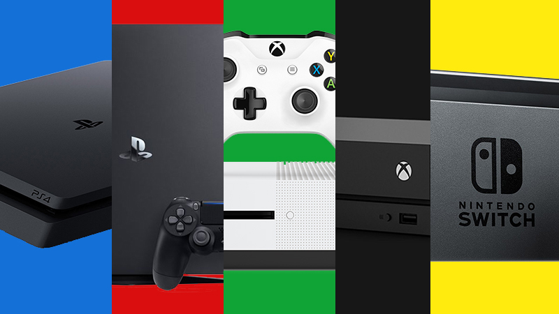

What is Console?
A video game console is an electronic, digital or computer device that outputs a video signal or visual image to display a video game that one or more people can play.
The term "video game console" is primarily used to distinguish a console machine primarily designed for consumers to use for playing video games, in contrast to arcade machines or home computers. An arcade machine consists of a video game computer, display, game controller (joystick, buttons, etc.) and speakers housed in large chassis. A home computer is a personal computer designed for home use for a variety of purposes, such as bookkeeping, accessing the Internet and playing video games.
Unlike similar consumer electronics such as music players and movie players, which use industry-wide standard formats, video game consoles use proprietary formats which compete with each other for market share.There are various types of video game consoles, including home video game consoles, handheld game consoles, microconsoles and dedicated consoles. Although Ralph Baer had built working game consoles by 1966, it was nearly a decade before the Pong game made them commonplace in regular people's living rooms. Through evolution over the 1990s and 2000s, game consoles have expanded to offer additional functions such as CD players, DVD players, Blu-ray disc players, web browsers, set-top boxes and more.
Generation
Console have many generation.There is eight generation until now.And every generation have the characteristic. Some people think console now is not interesting again because the game is not memorable and full of micro transaction but for me play with console is still fun because the sensation is different with play on PC.
Console VS PC